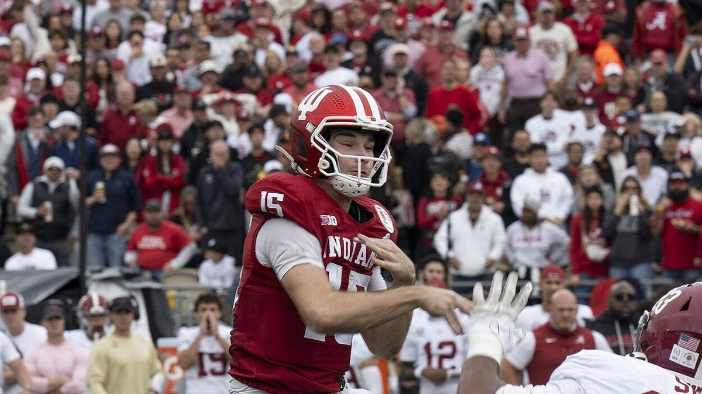
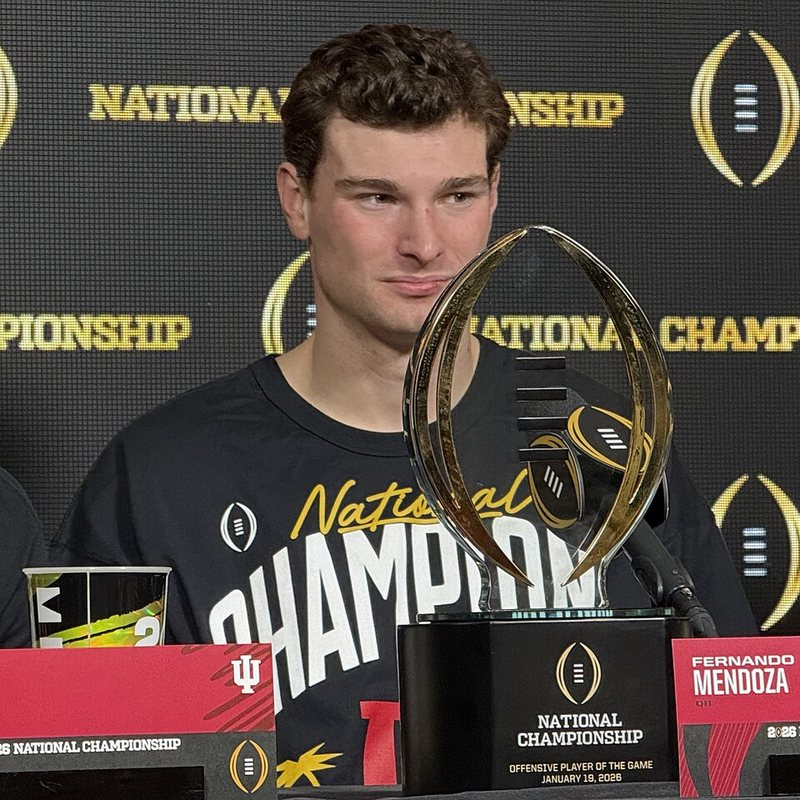

Fernando Mendoza's First NFL Start: 7 for 7, Then Six Sacks
I'm not a Raiders fan. I watched every snap anyway, because I watched this kid throw at Memorial Stadium when nobody outside Berkeley knew his name.

Let me get this out of the way first. I don't root for the Raiders. They left, twice, and I'm still a little bitter about it.
But I'll root for Fernando Mendoza until the day he retires, because I remember him at Cal. Skinny redshirt, Memorial Stadium half full on a cold Saturday, a kid from Miami getting hit way too much behind a line that couldn't block anybody, and still standing in there. Then he went to Indiana, went 16 and 0, won the Heisman, won the national title, and went first overall. Our guy. Sort of.
So yes, Sunday I was a Raiders fan for three hours. Don't tell anybody.
The Raiders fall to 4 and 6. The kid's line: 17 of 29, 143 yards, a rushing touchdown, no turnovers.
Wait, was this actually his NFL debut?
Technically he'd already played. He came in late in the Week 5 blowout loss to New England and went 6 of 8 for 48 yards in mop up time. This was the real one, though: his name on the depth chart, his week of practice, his game. He got it because the Raiders shipped Kirk Cousins to Minnesota on November 10, and Klint Kubiak handed him the keys five days later.
And he walked into the defending champs?
Of all the defenses to get for your first start. He's the first quarterback to make his first start against the defending Super Bowl champion since Justin Herbert drew Kansas City back in 2020. Mike Macdonald's defense eats rookies. Everybody knew that going in.
The first half was the guy I remember
First half
- 11 of 13 for 90 yards
- 5 carries for 21 yards
- First 7 throws all complete
- Raiders led 10 to 7 at the half
Second half
- 6 of 16 for 53 yards
- 4 sacks taken
- 0 for 7 on third down
- Seattle outscored them 14 to 3
He opened 7 for 7. Only two other quarterbacks since 1991 have opened a first start like that, Robert Griffin III and Derek Carr. The opening drive went 11 plays and 46 yards, and on third down he pulled it, slipped out and ran it in from 10 for his first NFL touchdown. I yelled at the TV like I'd been a season ticket holder since the Coliseum.
That rushing score put him in a weird little club, too. He's the fourth quarterback taken first overall since 2000 whose first career touchdown came on the ground, with Michael Vick, Matthew Stafford and Joe Burrow. Not bad company for a kid who used to get sacked on every third down at Cal.
The next drive went 11 plays too and ended in a field goal. He completed passes to eight different guys in the first half alone. He scrambled away from pressure and found Cody White for 22. He looked calm, he looked fast with the ball, and for 30 minutes he looked like what you hope a number one pick looks like.

Then Seattle figured it out
And it got ugly. Seattle started sending defensive backs, and Devon Witherspoon got home twice on three blitzes without anybody laying a finger on him. Brock Bowers went down with an ankle at the start of the third, which didn't help. The Raiders punted seven times in a row. Mendoza had 15 passing yards in the whole second half until he hit Ashton Jeanty for 38 with under four minutes left, and by then it was too late.
Six sacks on the day. Pressured 19 times. That's the part that'll show up on the film Monday.
What I liked is what came after. He didn't throw his line under the bus. He threw himself under it. "A lot of sacks today were on me, not any on the offensive line," he said. "I need to be better, especially with those DB blitzes." He said Macdonald fooled him a couple of times. And then the line I'll remember: "It's good to get punched in the face because now it's a great opportunity to grow and learn and to really unveil all the deficiencies that I have in my game."
A 23 year old saying that after losing his first start? That's a quarterback. I've heard veterans make worse excuses after better games.
What the coach said, and what I'd say
Kubiak called the debut good, and he put some of it on himself. "We've got to support him better. I've got to help him better in the second half." He also called going 0 for 7 on third down after halftime unacceptable, and he's right, but that's on the whole operation, not just the rookie.
Here's my honest grade from my couch. He didn't turn it over once, which is the thing that kills rookie quarterbacks. He made plays with his legs. He was accurate when he had time. He held the ball too long against blitzes, and good defenses are going to test that every week until he fixes it. 71.5 passer rating doesn't look like much, but I've seen a lot worse first starts from guys who ended up great.
I'll keep watching. Mostly on mute. Mostly while pretending it's for the Cal connection and not because I'm starting to like this kid more than I like half the quarterbacks in the NFC West.
If you missed it, we broke down how the Raiders got here in our Raiders 2026 preview, and the last time they saw the Bay was the 38 to 17 Niners win a week before this. Bowers' ankle and the rest of their bumps are on the Raiders injury report. And while Mendoza was getting his first taste of an NFL Sunday, Purdy was hanging 46 on Dallas.
More coverage: Bay Area NFL · Cal · Bay Area Sports Blog home